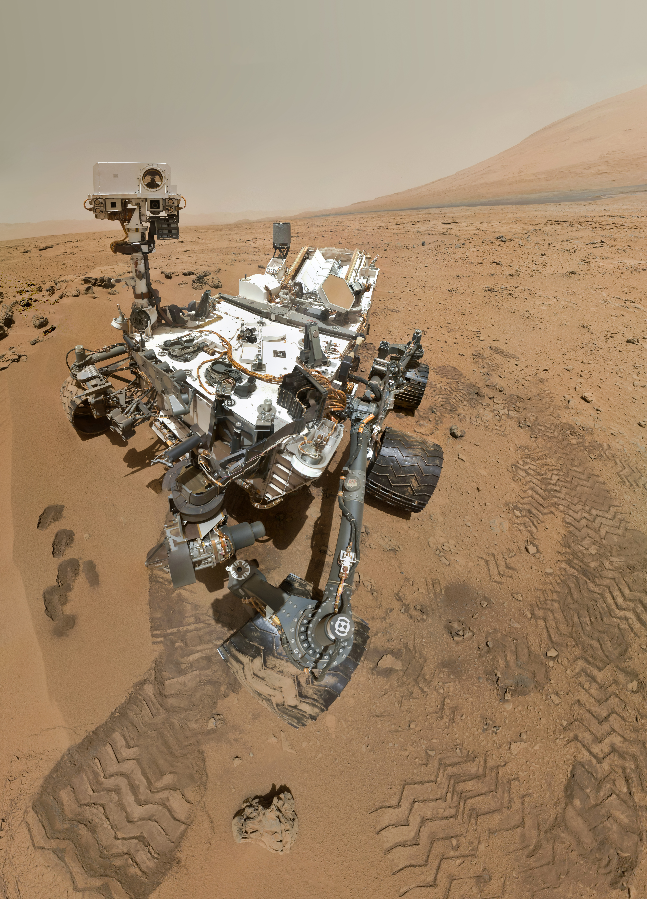

La Exploración de Marte
Resumen: El ser humano ha enviado diversas misiones robóticas al planeta rojo con el fin de descubrir indicios de vida pasada y preparar futuras misiones tripuladas.
El Robot Curiosity y sus Hallazgos
Desde su aterrizaje en 2012, el rover Curiosity ha analizado el cráter Gale, encontrando evidencia de que Marte alguna vez tuvo condiciones habitables con agua líquida en su superficie.

Hitos en la exploración marciana
- 1976: Las sondas Viking aterrizan con éxito.
- 2004: Spirit y Opportunity comienzan su misión de largo aliento.
- 2021: El rover Perseverance despliega el helicóptero Ingenuity.